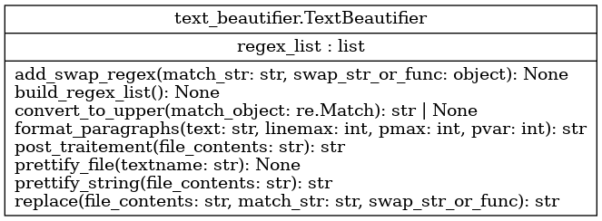

Module test_beautifier
Diagramme de classe
{kind=link}
Code du module
Code utilitaire améliorer le format d’un fichier de texte en créant des paragraphes, des lignes de longueur limitée, des phrases qui débutent par une majuscule.
Copyright 2024-2025 F. Mailhot et Université de Sherbrooke
- class text_beautifier.TextBeautifier[source]
Bases :
objectClasse utilisée pour rendre plus attrayant un texte généré automatiquement
Copyright 2024-2025, F. Mailhot et Université de Sherbrooke
Constructeur qui initialise la classe TextBeautifier
Ajoute une liste vide d’expressions régulières
Ajoute un ensemble d’expressions régulières à utiliser en séquence sur des chaînes de caractères à traiter
- Args :
void : Tout le nécessaire se trouve dans le code d’initialisation de la classe TextBeautifier
- Returns :
void : Au retour, l’objet est initialisé avec l’ensemble d’expressions régulières à appliquer
- add_swap_regex(match_str: str, swap_str_or_func: object) None[source]
- Ajoute une expression régulière pour trouver une certaine séquence de caractères,
ainsi qu’une expression régulière pour la remplacer
- Args :
match_str (str) : Expression régulière pour trouver une chaîne de caractères swap_str_of_func (object) : Expression régulière pour remplacer la chaîne trouvée ou fonction à appliquer
- Returns :
void : Ne fait qu’ajouter un tuple à la liste des expressions régulières de l’objet
Copyright 2024-2025, F. Mailhot et Université de Sherbrooke
- build_regex_list() None[source]
Ajoute un ensemble d’expressions régulières pour modifier le texte généré et le rendre plus élégant
- Args :
void : N’utilise que l’objet, où on ajoute l’ensemble d’expressions régulières
- Returns :
void : Ne fait qu’ajouter une liste d’expressions régulières à l’objet
Copyright 2024-2025, F. Mailhot et Université de Sherbrooke
- static convert_to_upper(match_object: Match) str | None[source]
Conversion de la chaîne de caractères en majuscule. Typiquement utilisé sur un unique caractère
- Args :
match_object (str) : Chaîne de caractères à convertir en majuscule
- Returns :
(str) : Chaîne de caractères convertie en majuscule
Copyright 2024-2025, F. Mailhot et Université de Sherbrooke
- static format_paragraphs(text: str, linemax: int = 100, pmax: int = 100, pvar: int = 40) str[source]
- Modifie un texte comprenant une série de mots séparés par des espaces pour ajouter des paragraphes de
tailles variables ainsi que des terminaisons de lignes pour limiter la longueur des lignes du texte
- Args :
text (str) : Texte suivi (série de mots séparés par des espaces) linemax (int) : Nombre maximal de caractères sur une ligne pmax (int) : Nombre moyen de mots dans un paragraphe pvar (int) : Variation maximale du nombre de mots dans un paragraphe
- Returns :
mod_text (str) : Texte modifié, avec des fins de paragraphes et de lignes
Copyright 2024-2025, F. Mailhot et Université de Sherbrooke
- post_traitement(file_contents: str) str[source]
Mettre des majuscules aux endroits appropriés, ajouter des fins de lignes et de paragraphes
- Args :
file_contents (str) : Texte à traiter
- Returns :
file_contents (str) : Le texte modifié
Copyright 2024-2025, F. Mailhot et Université de Sherbrooke
- prettify_file(textname: str) None[source]
- Modifie un fichier de texte pour le rendre plus attrayant :
Mise en forme des virgules et des points à la fin d’une phrase
Mise en forme des mots en début de phrase (majuscule pour la première lettre)
Ajout de séparation de paragraphes et de fin de lignes
- Args :
textname (str) : Nom du fichier de texte à modifier
- Returns :
void : Le fichier d’origine est remplacé par le texte modifié, alors rien n’est retourné
Copyright 2024-2025, F. Mailhot et Université de Sherbrooke
- prettify_string(file_contents: str) str[source]
- Modifie un fichier de texte pour le rendre plus attrayant :
Mise en forme des virgules et des points à la fin d’une phrase
Mise en forme des mots en début de phrase (majuscule pour la première lettre)
Ajout de séparation de paragraphes et de fin de lignes
- Args :
textname (str) : Nom du fichier de texte à modifier
- Returns :
void : Le fichier d’origine est remplacé par le texte modifié, alors rien n’est retourné
Copyright 2024, F. Mailhot et Université de Sherbrooke
- static replace(file_contents: str, match_str: str, swap_str_or_func) str[source]
Utilise une expression régulière pour identifier et modifier des éléments d’un texte
- Args :
file_contents (str) : Texte complet à modifier match_str (str) : Expression régulière cible swap_str_or_func (str, callable) : Expression régulière pour modifier la cible (str) ou méthode à appliquer
- Returns :
file_contents (str) : Texte modifié
Copyright 2024-2025, F. Mailhot et Université de Sherbrooke
Note
Documentation créée le 20 févr. 2025.